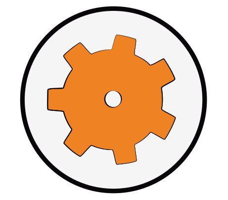

Obrázek 1.1: Rozložení oken v programu VS Code
Jak začít
programovat čipy
(ESP32)
Jaroslav Páral
Jakub Streit
Rudolf Hlaváček
a další

www.robotarna.cz
za kolektiv autorů
Miroslav Burda
editor
dokumentace@robotikabrno.cz
verze 0.6
Tento text je určen pro začátečníky a mírně pokročilé v oblasti stavby autonomních robotů – převážně středoškoláky v prvním ročníku, kteří se pokoušejí postavit svého prvního autonomního robota, nejčastěji pro nějakou soutěž1 . Protože byl sepsán na pracovišti Robotárna2 (pobočka DDM Helceletka Brno), jsou některé části určené především členům jeho kroužků. Ale většina textu je použitelná všeobecně.
Každý robot se musí
Přitom můžou nastat zhruba dvě situace:
Už bylo zmíněno, že stavba robotů zahrnuje tři propojené, ale relativně nezávislé okruhy: návrh a výrobu mechanické konstrukce, návrh a zapojení elektroniky a programování. Proto je dobré roboty stavět v týmech, kde se jednotliví členové zaměřují na tyto oblasti a navzájem se doplňují. Navíc každý tým potřebuje řadu pomocných činností (nákup součástek, vyhledávání údajů na internetu a pod.). Je dobré mít proto v každém týmu ještě pomocníka, který podporuje ostatní a umožňuje jim soustředit se na jejich hlavní úkoly.
Úplně ideální potom je, když každou funkci v týmu zastávají dva lidé, takže se mohou vzájemně zastupovat. Tým by potom měl celkem osm členů – dva mechaniky, dva elektroniky, dva programátory a dva pomocníky. To se ale v praxi téměř nikdy nepodaří. Často nastane právě opačný případ, kdy tým má pouze dva nebo tři členy, kteří se o všechny činnosti musí nějak podělit.
V každém případě ale platí, že je výhoda, pokud lidé v týmu znají i věci mimo jejich „hlavní obor“, tj. když například programátor zná základy elekroniky.
Začátečníci obvykle tuto posloupnost nedodrží a pak staví mechaniku pro 3 a více robotů, než zjistí, že je to dost práce navíc. A taky dost času navíc, který potom před soutěží může chybět.
Hardware:
Software:
Veškerý zde popisovaný a doporučovaný software je freeware.
Znalosti:
Taky se hodí vědět, že:
Pokud s programováním čipů začínáme, čekají nás tyto úkoly:
Toto vše podrobněji probereme na dalších řádcích.
Visual Studio Code (zkráceně VS Code) je něco jako textový editor, speciálně navržený pro programátory čehokoliv. Instalujte podobně jako každý jiný program, stahujte zde: https://code.visualstudio.com/
PlatformIO je ten software, který umožní program v C++ přeložit tak, aby ho čip pochopil a taky ho do čipu umí nahrát. Instalace podle návodu zde: http://docs.platformio.org/en/latest/ide/vscode.html\#installation
Program (ne)píšete jen do jednoho souboru, ale aby vše fungovalo, potřebujete povícero dalších souborů, které dohromady tvoří tzv. projekt. Tyto soubory jsou mezi sebou hodně provázané a navíc vázané na konkrétní místo uložení, takže vám po překopírování na jiný počítač pravděpodobně program nepůjde přeložit a nebo nahrát do čipu. Řešení: uložit celý projekt na flešku. Na novém počítači založit nový projekt a potřebné části zdrojového kódu kopírovat pomocí Ctrl+C, Ctrl+V.
Pro Linux Lubuntu: projekt musí být uložen na pevném disku, ne na flešce, jinak prostě nepojede, netuším proč.
Obrázek 1.1 na straně 13 ukazuje rozložení oken v rámci projektu. Hlavní okno rozdělte na dvě části pro zobrazení dvou upravovaných souborů pomocí ikony v kroužku. Začínáme v okně Explorer, kde je umístěna adresářová struktura projektu7 . Otevřete soubory platformio.ini a v adresáři src soubor main.cpp.
Pro pohodlnou práci s deskou ALKS byla napsaná tzv. knihovna LearningKit. Aby fungovala, musí být do souboru platformio.ini dopsán řádek lib_deps = 1745 (bez mezery na začátku řádku) a do záhlaví souboru main.cpp doplňte include "LearningKit.h" Dále dopište do souboru main.cpp kód, který bliká červenou LED. Vše je vidět na obrázku 1.1. Celý zdrojový kód tohoto prvního programu (obsah souboru main.cpp) je uveden v kapitole 2.3.
Teď budou potřeba další dvě části VS Code: terminál (okno vpravo dole) a stavový řádek (Status bar – proužek pod terminálem). Na stavovém řádku klikněte na ikonu šipky8 (pátá zprava) a PlatformIO se pokusí váš program přeložit a nahrát do čipu. Pokud chcete program pouze přeložit, klikněte na ikonu zatržítko9 hned vedle.
Při prvním pokusu nahrát program do čipu na Linuxu může mít PlatformIO problém, že nenajde USB spojení na desku s čipem a vyžaduje ho doistalovat. Zpráva10 se objeví se v terminálu včetně nápovědy,11 jak to udělat. Nápověda je ale tak podrobná, že to středně poučený linuxový laik s pomocí internetu zvládne. Při všech dalších překladech už to nebude problém.
Další programy budou uvedeny v kapitole 2.3.
Datasheet je dokument, ve kterém jsou detailně popsány vlastnosti a možnosti dané elektronické součástky. Každá součástka má svůj datasheet.
Datasheet pro každou součástku je možné najít na internetu12 nebo na stránkách výrobce nebo prodejce součástky. Bohužel jsou všechny datasheety anglicky.
Mikroprocesor, mikrokontrolér, čip znamenají totéž – integrovaný obvod, který se snažíme naprogramovat, aby řídil robota nebo jeho část.
Pin je vývod (nožička) čipu. Jednoduché čipy (např. ATtiny) mají osm pinů, složitější čipy mají 32, 40, nebo také 100 pinů.
Pin může být nastavený jako vstupní nebo jako výstupní.
Pokud je pin nastavený jako vstupní, umí určit, zda na něm je napětí odpovídající logické jedničce (5 V nebo 3,3 V podle typu čipu) nebo logické nule (0 V) . Také umí přečíst, jaké je na něm analogové napětí.
Pokud je pin nastavený jako výstupní, umí se nastavit na logickou jedničku nebo logickou nulu.
Každá číslice ve dvojkové soustavě reprezentuje jeden bit (nabývá hodnot 0 nebo 1).
Osm bitů dohromady tvoří bajt. Nejnižší bit v bajtu leží vpravo (tzv. nultý bit ), další je nalevo od něj (první bit), až do sedmého bitu, který je nejvíce vlevo.
Upozornění: V jazyce C++ se rozlišují velká a malá písmena.
Příklady: #include <> – pro vkládání hlavičkových souborů
#include "" – pro vkládání vlastních hlavičkových souborů
#define KONSTANTA HODNOTA_KONSTANTY – pro definici konstanty,
všude kde se v kódu vyskytne text KONSTANTA bude tento text nahrazen
HODNOTA_KONSTANTY
Příklad: 5 + 2, přitom 5 a 2 jsou operandy a znaménko plus je operátor, který nám říká, že čísla chceme sečíst (provést operaci sečítání)
Pokud chceme zapoznámkovat pouze jeden řádek, použijeme //
Příklady:
Výraz je něco co nabývá nějaké hodnoty, např.: 5 + 3 je výraz, který nabývá hodnoty 8. 5 > 3 je výraz nabývající hodnoty true neboli pravda, x <= 10 je výraz který je pravdivý, pokud proměnná x(kterou musíme mít deklarovanou) menší nebo rovna číslu 10.
+ sčítání
- odčítaní
* násobení
/ dělení
pokud chceme zvýšit hodnotu proměnné o jedničku, napíšeme ++název_proměnné; pokud chceme snížit hodnotu proměnné o jedničku, napíšeme --název_proměnné;
Příklad:
Přehled logických operátorů:
== porovnání - rovnost
!= porovnání - nerovnost
&& logický součin
|| logický součet
! negace
< menší než
<= menší nebo rovno
> větší než
>= větší nebo rovno
Logický výraz může nabývat pouze dvou hodnot – pravda (true) a
nepravda (false). Obvykle je nepravda reprezentovaná nulou a pravda každým
nenulovým číslem. Logické výrazy se používají v podmínkách (viz např.
2.1.3)
.
Logické operace se používají při vyhodnocování logických výrazů.
Příklady:
a == b výraz je pravdivý, pokud se a rovná b
a != b výraz je pravdivý, pokud se a nerovná b lze to napsat i konkrétněji,
např.: a != 5, výraz je pravda pokud se a nerovná 5, pokud se rovná výsledkem
výrazu je nepravda(false) b > c výraz je pravdivý, pokud je b větší než c
b >= d výraz je pravdivý, pokud je b větší nebo rovný d
!(a > b) výraz v závorce je pravdivý, pokud je a větší než b, ale pak je
negováno(z pravdy se stává nepravda a naopak ), tj. celý výraz je nepravdivý,
pokud je a větší než b, pokud je a menší nebo rovno, tak je výraz pravdivý.
!(a == b) výraz (a == b) je negován znaménkem !, to znamená, že výraz je
pravdivý, pokud se výraz a nerovná výrazu b, v podstatě se to dá napsat i takto:
a != b
Pozor: negace výrazu (a > b), tj. !(a > b) není to samé jako výraz (a < b), ale správně
je to (a <= b) 1
Logický součin && se používá, pokud budeme potřebovat spojit dva nebo více výrazů dohromady, např.: (a > b)&&(c == d), výsledkem tohoto výrazu bude logický součin výrazů v závorkách, pro logický součin platí, že je pravda pokud oba výrazy jsou pravdivé, jinak je výsledek nepravda, tj. zde bude pravda pouze pokud bude a větší než b a zároveň bude platit, že c se rovná d. Logický součin použijeme, pokud musí všechny výryzy být pravda.
Logický součet || je pravdivý, pokud alespoň jeden výraz je pravdivý. Např.: (e <= f)||(g != 3) výraz bude pravda, pokud bude platit, že e je menší nebo roven f, nebo bude platit, že g se nerovná 3, anebo klidně budou platit oba výrazy.
Použijeme, pokud chceme, aby se do proměnné uložila nějaká data.
Syntaxe:
datový_typ název_proměnné;
syntaxe vkládání:
název_proměnné = hodnota_která_se_má_uložit;
Data do proměnné můžeme vložit rovnou při vytváření proměnných:
datový_typ název_proměnné = hodnota;
Příklad: uint8_t b = 5; Vytvoří se proměnná pojmenovaná b (která je v
rozsahu od 0 do 255) a uloží se do ní číslo 5.
int16_t B; Vytvoří se proměnná B. B není to samé jako b, protože jazyk C
rozlišuje VELKÁ a malá písmena.
B = 1024; Do proměnné B se uloží hodnota 1024;
Pokud chceme někam dát více příkazů, ale můžeme tam dát pouze jeden
příkaz, tak je dáme do složených závorek Příklad:
Použijeme, pokud chceme, aby se program mohl rozhodnout na základě nějaké
podmínky.
syntaxe:
Pokud platí PODMÍNKA v kulaté závorce, vykoná se PŘÍKAZ1, pokud neplatí, vykoná se PŘÍKAZ2. Za if nebo else může být pouze jeden příkaz, pokud jich tam chceme dát více, použijeme blok. Větev else je nepovinná.
Příklad:
podmínka může být výraz např.:
podmíněné příkazy lze vnořovat - v bloku příkazů může být další if Příklad:
Pokud platí PODMÍNKA1 tak se vykoná PŘÍKAZ1, pak se zkontroluje PODMÍNKA2, pokud platí, tak se vykoná PŘÍKAZ2, pokud ne, program pokračuje dál a vykoná PŘÍKAZ3. V případě, že neplatí ani PODMÍNKA1, tak se blok příkazů přeskočí a vykoná se blok příkazů za else, tj. PŘÍKAZ4.
Je tu možnost také do větve else napsat daší if else, vypadá to takto:
Pokud platí PODMÍNKA1, tak se vykoná PŘÍKAZ1, pokud ne, tak se zkontroluje PODMÍNKA2, pokud platí tak se vykoná PŘÍKAZ2, pokud neplatí, tak se vykoná PŘÍKAZ3. Výše zapsaný kód sice bude fungovat, ale není přehledný, a proto z důvodu lepší orientace v kódu zvolíme tento zápis:
Pokud by takto zapsaných podmínek bylo moc a vztahovali by se k jedné řídící proměnné lze použít příkaz několikanásobného větvění neboli switch. Tak například místo zápisu:
Lze napsat:
Čím se to celé zjednodušuje.
Tento cyklu použijeme, pokud předem známe kolikrát se má opakovat určitá operace Syntaxe:
Příklad:
Co tento kód udělá? Dejme tomu, že máme už předem vytvořené funkce rozsvit_ledku(), atd... Potom cyklus udělá následující: vytvoří proměnnou i datového typu uint8_t (celá čísla od 0 do 255), uloží do ní číslo 0. Potom zkontroluje podmínku, zda je proměnná i menší než 4, pak se provedou příkazy či funkce v těle cyklu, tj. rozsvítí se LED-dioda, bude svítit jednu sekundu, a pak zhasne. Pak se provede příkaz i++, ten zvýší hodnotu proměnné o jednu, tj. na číslo 1. Potom se kontroluje znovu podmínka, zdali je proměnná i (která má teď hodnotu 1) menší než 4, atd... Celkem se tělo cyklu vykoná čtyřikrát.
Cyklus for lze použít i bez proměnné, podmínky a zvýšení hodnoty, potom bude probíhat donekonečna. Příklad: for(;;)
Tento cyklus bude dělat to samé, co předchozí, s tím rozdílem, že to bude dělat donekonečna a nebude se ptát na podmínku.
Použití v programu pro robota: Nekonečný cyklus, ve kterém se kontrolují podmínky, zda je na čáře, zda je před ním soupeř, zda má udělat to či ono.
Použijeme, pokud nebudeme vědět kolikrát mají proběhnout příkazy a funkce v těle cyklu. Syntaxe:
Příklad:
Tento cyklus bude stát, dokud nezmáčkneme tlačítko. Vyžaduje mít předem naprogramovanou funkci ujed_1_cm() a je_tlacitko_stiskle().
Pokud se nám v zdrojovém kódu opakují dokola stejné příkazy, můžeme vytvořit funkce nebo procedury, které potom voláme a které nám usnadní kód. syntaxe:
Příklad:
pokud někde v programu použiji funkci secti(10, 2), tak výsledkem bude, jako bych napsal 10*10, tj. 100. Příklad:
procedura – je vlastně funkce, jen s tím rozdílem, že procedura má datový typ void a nemá return (tj. nevrací žádnou hodnotu).
Příklad:
Pokud někde v programu napíšu rozsvitLedku(), tak se rozsvítí LEDka na robotovi.
tělo funkce main – všechny příkazy, které jsou mezi složenými závorkami, se po zahajení programu postupně vykonají
Z funkcí a procedur se mohou vytvářet soubory pro usnadnění práce. těmto souborům se říká knihovny . Soubory mají koncovku .h Příklad: avr/io.h moje_knihovna.h
Vlastní knihovnu poté mohu vložit direktivou #include Příklad:
Pro práci s mikrokontroléry budeme potřebovat některé už vytvořené knihovny Příklad: Arduino.h – zavádí příkazy pro práci s čipy ATMega a ESP32 Learningkit.h – pro pohodlnou práci s deskou ALKS
Ve všech příkladech níže je uveden vždy obsah souboru main.cpp. Text předpokládá, že nad příklady budete samostatně přemýšlet a učit se z nich, proto se to, co bylo řečeno u prvního příkladu, už neopakuje u druhého. Doporučuji projít soubory LearningKit.h a LearningKit.cpp (viz v Exploreru adresář .piolibdeps/ArduinoLearningKitStarter_ID1745/src ), protože jsou v nich zkratky typu L_R a jejich přiřazení pinům čipu. Další příklady jsou na http://wall.robotikabrno.cz a https://www.arduino.cc/reference/en/.
Program bliká červnenou LED.
Žlutá LED zapínaná tlačítkem.
PWM umožňuje (ve spolupráci s drivery ) řídit motory, serva a podobně. Zde je použito na stmívání LED pomocí potenciometru.
tento kód funguje pro čip ESP32. Pro čipy řady ATMega, které jsou na deskách Arduino uno a Arduino nano, je potřeba použít tento kód:
Funguje stejně, ale místo příkazu ledcWrite je použit:
Rezistor nebo také odpor1 je součástka, která klade elektrickému proudu určitý odpor neboli ho omezuje. Toho se používá jako ochrana před zničením čipu nebo jeho části. Odpor se značí R. Jednotkou odporu je 1 Ohm, značka Ω.
Dva rezistory (nebo jiné součástky) mohou být zapojeny buď sériově (tj. za sebou) nebo paralelně (tj. vedle sebe), viz obrázek 3.1.

Kondenzátor je součástka, která uchovává elektrický náboj. Jeho hlavní vlastností je kapacita. Jednotkou kapacity je Farad, značka F. V praxi se používají násobky jako mikrofarad ( μ F), nanofarad (nF) a pikofarad2 (pF). Kondenzátory se nabíjí a vybíjí různě rychle a mají různou kapacitu. Keramické kondenzátory mají nejmenší kapacitu(pF, nF) a jsou nejrychlejší, tantalové mívají kapacitu okolo pár μF a jsou pomalejší a nejpomalejší jsou elektrolytické s kapacitou stovek až tisíců μF. U tantalových a elektrolytických kondenzátorů musíme dát pozor na polaritu, tj. kam připojujeme + a kam -. Další důležitý údaj je maximální hodnota napětí, kterou kondenzátor snese.
Dioda je součástka, která usměrňuje elektrický proud. To znamená, že pokud ji zapojíme do elektrického obvodu, tak zajistí, že proud bude téct pouze jedním směrem. Proto budeme diodu používat jako ochranu proti tzv. přepólování – chybnému zapojení baterie nebo součástky do obvodu, které obvykle vede ke zničení součástky. U samotné diody také záleží na polaritě, tj. při jejím zapojení musíme dávat pozor, kde má kladný pól a kde záporný.
Na diodě vzniká úbytek napětí, se kterým musíme počítat při návrhu obvodu. Tak například pokud připojím na diodu s úbytkem napětí 0,6 V připojím 12 V, tak za diodou bude napětí 11,4 V.
Ze začátku nám bude stačit, pokud budeme používat diody 1N4148 a 1N4007.
LED3 je součástka, která není primárně určená k usměrnění proudu, ale k signalizaci, zda obvodem protéká proud. K LED se vždy musí připojit rezistor.
Tranzistor je součástka, která umožňuje pomocí malých proudů z čipu řídit větší proudy, například do reproduktoru nebo motorku.
Tranzistor má tři nožičky: báze, kolektor a emitor. Tranzistorů existuje obrovské množství, pro jednoduchost se budeme zabývat pouze tzv. bipolárními tranzistory. Ty existují ve dvou provedeních PNP a NPN4 . Tranzistory mají prakticky dvě použití: mohou pracovat jako spínač (vypínač) nebo jako zesilovač. Budeme se zabývat jednodušším použitím, tj. jako spínače. Budeme používat tranzistory NPN. Pokud bude přes bázi do emitoru téct omezený (malý) proud, tranzistor se otevře a přes kolektor do emitoru bude téct velký proud. Tak nám stačil malý proud k řízení velkého. A toho budeme využívat.
Ze začátku nám bude stačit používat tranzistory BCC337, BCC547 a BD911.
Cívka neboli tlumivka je součástka, jejíž hlavní vlastností je indukčnost, jednotka henry, značka H. V praxi se používají milihenry (mH) a mikrohenry ( μH).
Čip nemůže řídit například motor přímo, protože jedním pinem může protékat obvykle maximálně 40 mA. Většina motorů potřebuje mnohem větší proud. Proto se používají součástky zvané drivery, které podle pokynů z čipu řídí proud z baterií do motorů a servomotorů.
Většinu čipů je potřeba napájet přesně 5 V nebo 3,3 V. Jak toho docílit z baterií, na kterých je například 9 V nebo 12 V, zkrátka více než 5 V? Navíc napětí na bateriích kolísá podle toho, jak moc proudu zrovna odebírají motory. Pro napájení čipů je proto nutné použít stabilizátor.
Stabilizátor je součástka, která z kolísavého vyššího napětí vyrobí přesné napětí nižší. Nejčastěji se používají stabilizátory řady 78XX, kde XX značí, na kolik voltů součástka stabilizuje, například 7805 stabilizuje na 5 V.
Aby stabilizátor mohl pracovat správně, je potřeba, aby napětí, které přivedeme na jeho vstup, bylo aspoň o 2 V vyšší než které potřebujeme, tj. pokud budu chtít stabilizovat napětí na 5 V, musím stabilizátor napájet aspoň 7 V. Přesné hodnoty pro každý stabilizátor jsou v jeho datasheetu.
Stabilizátor má tři piny (vstup, zem, výstup). Zapojí se takto: kladný pól baterie (+) se napojí na vstup, záporný pól na zem (−). Mikrokontrolér se zapojí pinem VCC na výstup stabilizátoru a GND se zapojí na zem stabilizátoru. Tímto máme připojený mikrokontrolér na napájení.
Pokud máme stabilizátor před sebou tak, abychom přečetli jeho označení, např. L7805, potom první pin zleva je vstup, druhý je zem a třetí, tj. úplně vpravo je výstup. Na vstup připojíme 7 V až 12 V, prostřední pin uzemníme, a poslední pin vyvedeme na VCC mikrokontroléru. Dále je potřeba věnovat pozornost zapojení kondenzátorů. Mezi vstup a zem připojím podle datasheetu kondenzátor s kapacitou 330 nF. Mezi výstup a zem kondenzátor 100 nF.
Pokud budeme potřebovat provozovat některé procesory na vyšší frekvenci, použijeme krystal. Například původní frekvence mikrokontroléru ATMega16 je nastavena na 1 MHz. S pomocí krystalu ji můžeme zvýšit až na 16 MHz. Krystal zapojíme takto: Jeden pin krystalu (je jedno, který) připojíme na pin XTAL1 a druhý na XTAL2. Dále na pin XTAL1 připojíme jednu nožičku kondenzátoru a druhou na digitální zem (11-GND). To samé u pinu XTAL2. Hodnotu kondenzátoru můžeme volit od 12 pF do 22 pF.
Pokud použijeme vodní model, tak (elektrický) proud je množství vody, které proteče vodičem za jednu sekundu.5 Značka: I, jednotka: 1 A = 1 ampér.
Elektrické napětí měříme vždy mezi dvěma body. Můžeme si ho představit jako rozdíl výšek dvou vodních hladin. Z výše položeného jezera (kladné napětí, +) teče voda (el. proud) do níže položeného (zem, nulový potenciál, −). Značka: U, jednotka: 1 V = 1 volt.
Mezi napětím U a elektrickým proudem I platí vztah:
Konstanta R se nazývá elektrický odpor, měříme ho ohmech, značka Ω.
Z Ohmůva zákona můžeme vyjádřit proud I:

Výkon je definován jako součin napětí a proudu:

Na součástkách, na kterých je úbytek napětí a kterými protéká proud, vznikají tepelné ztráty.
Příklad 1: Na rezistoru je úbytek napětí 3,6 V a protéká jím 240 mA. Jaký je tepelný ztrátový výkon?

Příklad 2: Diodou 1N4148 bude procházet 100 mA, při tomto proudu bude úbytek napětí na diodě 1 V. Nezničíme diodu 1N4148?
Příklad 3: Na stabilizátor L7805 přivádím 12 V, stabilizátor mi vytváří 5 V stabilizovaného napětí a odebírám z něho 250 mA. Jaký tepelný výkon bude potřeba uchladit?
LED je součástka, která není primárně určená k usměrnění proudu, ale k signalizaci. Může svítit světlem bílým, modrým, zeleným, červeným, ultrafialovým či infračerveným7 .
Pokud připojím diodu správně na napětí, tj. tak aby mohl procházet proud a ono přesto nic, tak jsem diodu spálil, protože jí tekl moc velký proud. A proto musíme vždy k diodě připojit do série rezistor, který omezí proud protékající přes LED. A to podle vzorce:
Příklad 1: Vypočítejte odpor rezistoru, který zapojíme do série k LED. Připojujeme k ní napětí 5 V a provozní proud je 20 mA a maximální proud, při kterém dojde ke zničení diody je 40 mA. Úbytek na diodě je 1,2 V.

Příklad 2: Máme sériově spojeny tři LED, s úbytky napětí 0,6 V, 0,8 V a 1,2 V. Připojíme je k zdroji o napětí 12 V. Rezistor o jak velkém odporu musíme použít, jestliže má diodami protékat 20 mA?

Musíme použít rezistor o odporu 470 Ω.
Měli bychom ještě spočítat tepelný výkon rezistoru. Můžeme použít úbytek napětí na rezistoru vynásobený procházejícím proudem:


Vyšel nám stejný výsledek, použijeme tedy 250 mW rezistor o odporu 470 Ω.
Motorek připojujeme vždy přes tranzistor. Pokud chceme řídit motorek z čipu stylem start – stop, postačí přes odpor např. 1 kΩ spojit výstupní pin čipu s bází tranzistoru a na emitor a kolektor připojit baterii a motorek zapojený do série.
Dále je potřeba bázi tranzistoru propojit pomocí např. 10 kΩ se zemí. Jinak totiž při vypnutém signálu z čipu báze „visí v luftě“ a chová se jako anténa – indukují se na ní různé signály a většinou se díky tomu motorek samovolně slabě otáčí.
Nakonec je potřeba mít společnou zem pro čip i pro motorek – pokud to není splněno, obvykle motorek nejede.
Pro větší motorky potřebujeme lepší tranzitor nebo dva tranzistory v tzv. Darlingtonově zapojení (viz web). Další možností jsou speciální integrované obvody pro řízení motorů, tzv. drivery.
Pokud chceme řídit motory programově pomocí PWM (viz další kapitola), musíme navíc mezi emitor a kolektor tranzistoru vložit (obyčejnou) diodu pólovanou závěrně vůči baterii. Při vypnutí tranzistoru vznikají totiž na cívkách motorku napěťové špičky, které deformují tvar PWM signálu. Další proudy se indukují, když se motorek po vypnutí proudu setrvačností otáčí dál.
Jak se řídí pohyb serva? Pro tento účel je ideální právě generování PWM signálu.
Servo se řídí logickým signálem (jedničkou) po dobu od 1 ms do 2 ms (často i od 0,5 ms do 2,5 ms), a celková perioda je 20 ms. Podle toho, jak dlouho signál trvá, tak se servo natočí. Tj. pokud budeme chtít servo maximálně natočit na jednu stranu, nastavíme pin, který slouží jako řídící signál pro servo, na logickou jedničku po dobu 1 ms a pak 19 ms logickou nulu a pak zase logickou jedničku, logickou nulu, atd...
Pokud budeme chtít servo posunout do druhé krajní polohy, necháme logickou jedničku po dobu 2 ms a logickou nulu po dobu 18 ms. Pokud budeme chtít střední polohu, tak jedničku nastavíme na 1,5 ms a nulu na 18,5 ms. Jestliže budeme potřebovat jiný úhel natočení, nastavíme logickou jedničku na odpovídající dobu.
Pozor! Servo nesnáší přepólování napětí, když se přepóluje, tak shoří (když se přepóluje signál, tak to tolik nevadí).
Deska ESP 32 je vývojová deska osazená čipem ESP-WROOM-32, který má řadu výborných vlastností.8
Deska se napájí z USB (5 V) a je na ní napěťový převodník na 3,3 V. Přitom USB může dodávat oficiálně 100 mA, v reálu ale běžně dodává 500 mA až 1 A. USB porty jsou také vcelku odolné proti zkratu.
Deska ALKS9 byla navržena přímo na Robotárně Brno právě proto, že hotová deska vás hlavně ze začátku zbavuje nutnosti vědět, co si můžete dovolit kam připojit a jestli to bude fungovat.
Na ALKS se dají nasadit desky ESP 32, Arduino uno a Arduino nano, které jí také poskytují napájení.
Stránky věnované desce ALKS jsou zde:
https://github.com/RoboticsBrno/ArduinoLearningKitStarter
Zapojení desky ALKS je zde: https://github.com/RoboticsBrno/ArduinoLearningKitStarter/blob/master/docs/ArduinoLearningKitStarter.pdf
Zapojení pinů desky ALKS zde: https://github.com/RoboticsBrno/ArduinoLearningKitStarter/blob/master/docs/pinout.pdf
Při připojování čehokoliv dalšího k této nebo jiné desce si nechte před zapojením napájení všechno zkontrolovat. Hlavně, pokud to žere víc proudu (serva a motory) nebo pokud to vyžaduje vyšší napětí.
Moduly bluetooth slouží ke komunikaci mezi dvěma čipy nebo počítačem a čipem (nebo jiným zařízením). Mohou být napájeny 5 V nebo 3,3 V.
Propojujeme vždy pin Rx na jednom čipu s pinem Tx na druhém čipu.
Nový bluetooth (zub) se musí napoprvé vyhledat a aktivovat v počítači. Pokaždé se musí připojit a zkontrolovat – když je komunikace v pořádku (aktivována, ale nemusí se přenášet data ), svítí LED na zubu. Když je v pořádku modul v počítači, tak bliká.
Dále musí být spojená země zubu a čipu.
V počítači jsou všechna data uložena pouze v podobě jedniček a nul. A proto se nám bude hodit, když se budeme aspoň trochu orientovat v převodech mezi dvojkovou a desítkovou soustavou.
V desítkové soustavě je základem číslo deset.
Příklad: číslo 156 si můžeme rozložit jako 1*10^2 + 5*10^1 + 6*10^0, přitom 10^0=1, 10^1=10, 10^2=10*10=100, 10^3=10*10*10=1000 atd ..., takže naše číslo potom vypadá takto: 1*100 + 5*10 + 6*1 = 156.
Ve dvojkové soustavě je základem číslo dva.
Příklad: číslo 11001010 rozložíme na
1*2^7 + 1*2^6 + 0*2^5 + 0*2^4 + 1*2^3 + 0*2^2 + 1*2^1 + 0*2^0, přitom
2^0=1, 2^1=2, 2^2=2*2=4, 2^3=2*2*2=8, 2^4=2*2*2*2=16, 2^5=32,
atd..., proto naše číslo má hodnotu:
1*128 + 1*64 + 0*32 + 0*16 + 1*8 + 0*4 + 1*2 + 0*1 = 202.
Jak na to, když chceme převádět číslo z desítkové soustavy do dvojkové?
Například převedeme číslo 97.
Nejprve je potřeba, abychom znali násobky čísla dva:
2, 4, 8, 16, 32, 64, 128, 256, 512, 1024, 2048, atd...
Napíšeme jedničku.
1
Najdeme nejbližší nižší násobek dvou k našemu číslu, v našem případě je
nejblíže 64. Odečteme si od 97 číslo 64, 97-64=33. Odečítali jsme číslo 64,
další v pořadí je číslo 32, je 32 obsaženo v 33? Ano, proto napíšeme další
jedničku.
11
Dále 33-32=1, další číslo je 16, je 16 obsaženo v 1? Ne, proto napíšeme nulu.
110
Další číslo je 8, také není obsaženo v 1, takže napíšeme nulu.
1100
Čísla 4 a 2 také nejsou obsažena v čísle 1, proto napíšeme nuly.
110000
A nakonec, je číslo jedna obsaženo v čísle jedna? Ano, napíšeme jedničku. Náš
binární zápis čísla 97 vypadá takto:1100001. Čísla v binární soustavě by měla
mít počet cifer rovno 8, 16, 32, podle toho s kolika bitovými čísly počítáme.
V našem případě musíme doplnit jednu nulu. Pokud bychom počítali s 16
bitovými čísly doplníme o 8 nul více. Nuly doplňujeme zleva. Zapamatujeme si
to snadno v desítkové soustavě se číslo 128 také nezmění pokud před něj dáme
nuly, 000128. Nuly navíc nebudeme psát v desítkové soustavě, ale v dvojkové
nám to pomůže se lépe orientovat. Takže to bude vypadat: 01100001 No a to
ještě není všechno. Aby mělo číslo správný tvar, musí mít před číslem
uvedeno 0b(nula a malé B), tím říkáme v jazyce C, že číslo je v (binární)
dvojkové soustavě.
Pozor: Čísla 101 a 0b101 nejsou to samé! Je to jednoduché, pokud 0b neuvedeme bude překladač číslo brát jakože je v desítkové soustavě. Tj. 101 => číslo sto jedna, 0b101 => číslo pět.
Další příklad:
Převedeme číslo 237.
Nejbližší nižší číslo je 128.
1
237-128=109 je číslo 64 obsaženo v čísle 109? ANO, další jednička.
11
109-64=45 je číslo 32 obsaženo v 45? ANO, jednička.
111
45-32=13 je 16 obsaženo v čísle 13? NE, nula.
1110
je číslo 8 obsaženo v 13? ANO, jednička.
11101
13-8=5 je 4 obsaženo v 5? ANO, jednička.
111011
5-4=1 je obsažena v 1? NE, nula.
1110110
je 1 obsažena v 1? ANO, jednička.
11101101 Binární zápis čísla 237 vypadá takto:11101101.
Vezmeme si například binární číslo 1011. Očíslujeme si pozice zprava doleva od nuly, tj.:
Pohybujeme se v dvojkové soustavě, tj. základ bude 2. Vezmeme nultou číslici a vynásobíme s ní číslo 2^0. Dostáváme 1*2^0 = 1. Dále první číslici vynásobíme číslem 2^1, tj. 1*2^1 = 2. Dále druhou číslici vynásobíme číslem 2^2, tj. 0*2^2 = 0. A to samé provedeme s číslicí na třetí pozici: 1*2^3 = 8. A nyní čísla sečteme 8 + 0 + 2 + 1 = 11, takže binární číslo 1011 převedené do desítkové soustavy je 11.
Příklad 2: Převeďte binární číslo 11101001 do desítkové soustavy.
1*2^0 + 0*2^1 + 0*2^2 + 1*2^3 + 0*2^4 + 1*2^5 + 1*2^6 + 1*2^7 To je:
1 + 0 + 0 + 8 + 0 + 32 + 64 + 128 = 233 Binární číslo 11101001
převedeno do desítkové soustavy je 233.
Příklad 3: Převeďte binární číslo 00010101.
1*2^0 + 0*2^1 + 1*2^2 + 0*2^3 + 1*2^4 + 0*2^5 + 0*2^6 + 0*2^7,
samozřejmě členy 2^x, které násobíme nulou budou nulové a tudíž je můžeme
beztrestně vynechat, tj.
1*2^0 + 1*2^2 + 1*2^4 = 1 + 4 + 16 = 21 Binární číslo 00010101 má
v desítkové soustavě hodnotu 21.
Bitové operace se od logických operací (viz 2.1.2) liší tím, že se neaplikují na číslo jako celek, ale bit po bitu, viz níže.
My budeme potřebovat následující bitové operace: bitový součet, bitový součin, bitovou negaci, bitový posun doleva.
| bitový součet
& bitový součin
~ bitová negace
^ bitový exluzivní součet
<< bitový posuv doleva
>> bitový posuv doprava
Platí, že 0|0=0, 0|1=1, 1|0=1, 1|1=1, sčítají se vždy pouze bity, které leží pod sebou. Zkrátka pokud je aspoň jeden bit jedna, výsledek je také jedna.
Příklad: máme dvě binární čísla 00000100 a 01100001 a chceme je bitově sečíst.
Když sečteme nulté bity zadaných čísel, dostamene 0|1=1. Pak provedeme bitový součet i pro první, druhé a další bity. Zapíšeme: (0b00000100 | 0b01100001); Nebo pokud budeme mít čísla v proměnných:
Do proměnné c se zapíše výsledná hodnota.
Výsledek: 01100101.
Platí, že 0&0=0, 0&1=0, 1&0=0, 1&1=1, tady platí, že výsledek je jedna, pokud oba bity jsou jedna. Příklad: bitový součin čísel 00110011 a 01000001 Zapíšeme: (0b00110011 & 0b01000001); Nebo pokud budeme mít čísla v proměnných:
Výsledná hodnota se zapíše do proměnné e.
Tam, kde byla jednička, bude nula, a kde byla nula, bude jednička. Příklad: znegujte číslo 00110101 Zapíšeme: ~(0b00110101); Nebo pokud budeme mít číslo v proměnné:
Do proměnné b se zapíše výsledná hodnota.
Výsledkem exklusivního součinu je pravda, pokud se hodnoty liší, tj. nejsou stejné. Takže platí 0^0=0, 0^1=1, 1^0=1, 1^1=0
Zapíšeme: (0b00110011 ^ 0b01000001); Nebo pokud budeme mít čísla v proměnných:
Výsledná hodnota se zapíše do proměnné e.
Vezmeme celé osmibitové číslo a posuneme ho o určitý počet míst doleva. Přitom čísla vlevo zmizí a na na uprázdněné místo vpravo přijdou vždy nuly. Zapíšeme: (0b01000101 << 3); Nebo pokud budeme mít číslo v proměnné:
Do proměnné d se přiřadí výsledek operace. Pokud například už nebudeme potřebovat původní hodnotu proměnné c, lze to napsat i takto:
Hodnota v proměnné c se nejprve posune o tři pozice a pak se výsledná pozice zapíše na stejnou pozici v paměti mikrokontroléru.
Příklad: proveďte bitový posun doleva o tři s číslem 00000101
Bitový posun doprava je podobný jako operace bitový posun doleva, liší se jen ve směru posunu, tj. posouvá se na opačnou stranu. Příklad 1: Proveďte bitový posun doprava o tři pozice s binárním číslem 00000101. Zapíšeme: (0b00000101 >> 3); Výsledkem bude toto:
Příklad 2: Proveďte bitový posun o dvě pozice doprava a potom o tři doleva s binárním číslem 11110111. Zapíšeme: ((0b11110111 >> 2) << 3); Výsledkem bude toto:
Příklad 3: Ale co když zadám číslo do proměnné v desítkové soustavě, například 189 a provedu bitový posun o dvě pozice doprava? Co dostanu? Dostanu snad 1? Ne, i když jsme číslo zadali v desítkové soustavě, v mikrokontroléru je stejně uloženo jako jedničky a nuly, takže číslo musíme nejprve převést do dvojkové soustavy. 189 = 0b10111101 A teď posun o dvě pozice doprava:
00101111 a to je číslo 47. Takže 47 je výsledek bitového posunu čísla 189 o dvě pozice doprava.
Zapíšeme takto:
No a výsledek(tj. číslo 47 ) se uloží do proměnné b.
Tento text je psán v sázecím systému LATEX. Jeho silná stránka je především matematická sazba (bohužel nevyužijeme) a snadné zpracování obsahu, rejstříků, seznamů obrázků a tabulek a podobně, což dramaticky urychluje přípravu dokumentu. Čas, který vložíte do nastavení a učení se systému, se vrátí v rychlosti práce → jedná se o řešení vhodné pro delší dokumenty, např. pro soutěž SOČ nebo dlouhodobou maturitní práci.
Návody pro LATEXlze najít v http://mirrors.nic.cz/tex-_archive/info/czech/\|latex-_pro-_pragmatiky/latex-_pro-_pragmatiky.pdf a na internetu. Hodně vám také může pomoct zdrojový text této dokumentace.
Příkazy LATEXu podobně jako C++ a systémy typu Linux rozlišují velká a malá písmena.
Ve WinXP používám PSpad, v linuxu TeXstudio. Oba editory umí zavolat překlad do pdf pomocí klávesové zkratky, zobrazit výsledný pdf a barevné zvýraznění syntaxe. PSpad se dá rozjet i pod linuxem pomocí prostředí Wine, ale nepodařilo se mi rozchodit volání překladu.
Proficad1 je software určený původně pro snadné a rychlé kreslení elektronických schémat a v této oblasti je vynikající. Lze jej použít i jako jednoduchý vektorový editor obrázků.
SPŠ Sokolská zakoupila plnou multilicenci pro Proficad, takže studenti i učitelé jej mohou používat bez omezení.
Ovládání programu je velice intuitivní a nápovědu prakticky nepotřebujete – s jedinou výjimkou, a tou je nastavení rastru. Po instalaci je rastr zobrazení automaticky nastaven na 2 mm. To znamená, že součástky můžete umisťovat například 10 mm nebo 12 mm od kraje, ale nic mezi tím. Většinou se to hodí – součástky máte na schématu pěkně zarovnané – ale někdy je prostě potřeba rastr například vypnout neboli nastavit na nulu. Nastavení rastru je schované zde: soubor/nastavení/dokument/obsah/rastr.
Ve WinXP se osvědčil Foxit Reader verze 2.3, v linuxu Evince.
Roboty rozlišujeme podle způsobu ovládání a podle velikosti.
Každý robot může být buď řízený nebo autonomní. Autonomní znamená, že je naprogramovaný a během soutěže nebo prezentace se pohybuje samostatně.
Roboty můžeme řídit po kabelu nebo bezdrátově, například přes bluetooth.
Na škole a v DDM stavíme a programujeme hlavně roboty dvojího typu : „střední“ a „velké“.
Jako střední používáme roboty yunimin a 3pi - jsou v zásadě hotové a „pouze“ se programují, jsou určené pro soutěže typu sledování čáry (Robotický den v Praze, Istrobot), minisumo a další. Pro střední roboty neexistuje soutěž, kde by se ovládali po kabelu, musí proto být autonomní.
Velké roboty (typicky pro soutěž Eurobot a Robotický den) si stavíme sami. Mohou být dálkově řízené i autonomní. Začátečníkům se silně doporučuje začít s dálkově řízeným robotem a nebo se přidat k týmu zkušenějších konstruktérů.
Celého robota nejprve navrhneme ve vhodném CAD programu: Solidworks1 , onshape2 , . Pokud jako základní materiál zvolíme překližku nebo například plexisklo (kombinované s díly z lega), můžeme díly vymodelované v CADu nechat vyřezat na laseru na pracovišti Fablab.3 To dramaticky urychluje práci. Pro konstrukci prototypů se také hodí měkčené PVC.
Při stavbě velkých robotů se držíme osvědčeného schématu:
Podvozek tvoří základní deska z překližky nebo rám z hliníkových profilů typu „L“ tvaru obdélníku, osmiúhelníku nebo kruhu. Na podvozku jsou připevněné dva motory z akušroubováků nebo z akuvrtaček včetně převodovek, které se koupí hotové. Jiné typy motorů jsou buď pomalé nebo slabé. V žádném případě se nepokoušejte koupit pouze motor (např. protože je levnější) a vyrábět si převody sami.
Dále jsou zde dvě kola, každé připojené ke svému motoru a jedna nebo více podpěr podvozku, obvykle z kartáčku na zuby. Motory s koly lze umístit doprostřed nebo dozadu, podle toho, co má robot na hřišti dělat.
Na podvozek se umisťuje konstrukce z hliníkových tyčí, profilů nebo z merkuru, s pomocí které robot plní svoje úkoly. Méně tuhé materiály se neosvědčily.
Chyba:
Please specify ’upload_port’ environment or use global ’–upload-port’
option
Řešení: pomohlo spustit příkaz sudo service udev restart a znovu spustit VS code a odpojit a připojit desku.
Maximální napětí: 100 V
Maximální proud: 200 mA
Maximální výkon: 500 mW
Úbytek napětí: 1,8 V
Maximální napětí: 1000 V
Maximální proud: 1 A
Maximální výkon: 3 W
Úbytek napětí: 1,1 V
Max. napětí mezi kol. a emit. V CEO:50 V
Max. napětí mezi bází a emit. V CBO: 5 V
Max. proud tekoucí kolektorem IC: 800 mA
Maximální výkon PC: 625 mW
Zesílení hfe: 100 až 600
Max. napětí mezi kol. a emit. V CEO: 45 V
Max. napětí mezi bází a emit. V CBO: 6 V
Max. proud tekoucí kolektorem IC: 100 mA
Maximální výkon PC: 500 mW
Zesílení hfe: 110 až 800
Max. napětí mezi kol. a emit.V CEO: 100 V
Max. napětí mezi bází a emit. V CBO: 5 V
Max. proud tekoucí kolektorem IC: 15 A
Maximální výkon PC: 90 W
Zesílení hfe: 5 až 250
Důležité je si všimnout, že minimální zesílení4 je 5. To znamená, že pokud budeme chtít tranzistorem spínat proud 10 A, tak budeme muset nechat bází téct řídící proud 2 A, to znamená, že ho nemůžeme naplno využít, pokud ho budeme řídit mikrokontrolérem, tj. musíme ho spínat jiným tranzistorem. Anebo přijdeme na myšlenku, že pokud budeme chtít řídit velké proudy, budeme potřebovat tranzistory typu MOS-FET, např.: IRF520, IRL3803.
Drivery do tiskáren mají příponu ppd. Napřed se musí nainstalovat program cups.
Irfan view jede i v Linuxu5 .
Co je přerušení? Procesor může zvládnout pouze jednu operaci na jeden tik krystalu, postupuje od jednoho příkazu k druhému a nemůže jen tak všeho nechat a věnovat se něčemu jinému, občas je to ale potřeba. Při přerušení procesor všeho nechá a bude se věnovat přerušení, potom co skončí se bude věnovat dál programu tam, kde přestal.
Github
Lorris
Adruino IDE
Laser ve Lablabu
Osciloskop
Baterie LiPol a jejich nabíjení
Převodník napěťových úrovní
Pájení
Sběrnice - USART/UART, IIC, SPI, další?